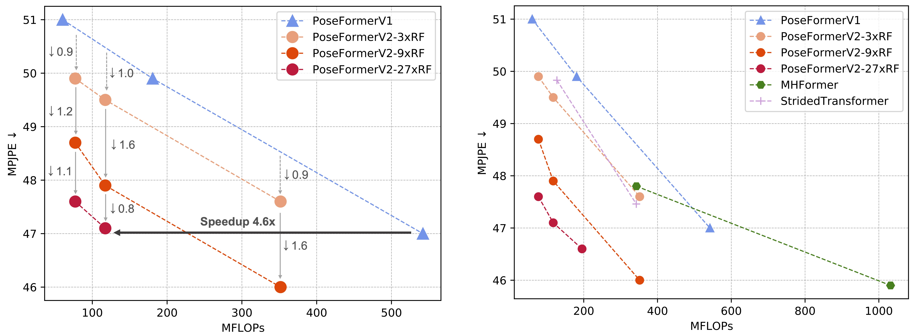

PoseFormerV2: Exploring Frequency Domain for Efficient and Robust 3D Human Pose Estimation

Abstract
Recently, transformer-based methods have gained significant success in sequential 2D-to-3D lifting human pose estimation. As a pioneering work, PoseFormer captures spatial relations of human joints in each video frame and human dynamics across frames with cascaded transformer layers and has achieved impressive performance. However, in real scenarios, the performance of PoseFormer and its follow-ups is limited by two factors: (a) The length of the input joint sequence; (b) The quality of 2D joint detection. Existing methods typically apply self-attention to all frames of the input sequence, causing a huge computational burden when the frame number is increased to obtain advanced estimation accuracy, and they are not robust to noise naturally brought by the limited capability of 2D joint detectors. In this paper, we propose PoseFormerV2, which exploits a compact representation of lengthy skeleton sequences in the frequency domain to efficiently scale up the receptive field and boost robustness to noisy 2D joint detection. With minimum modifications to PoseFormer, the proposed method effectively fuses features both in the time domain and frequency domain, enjoying a better speed-accuracy trade-off than its precursor. Extensive experiments on two benchmark datasets (i.e., Human3.6M and MPI-INF-3DHP) demonstrate that the proposed approach significantly outperforms the original PoseFormer and other transformer-based variants.
Quantitative Results
Our method outperforms PoseFormerV1 [1] (left) and other transformer-based methods (right) in terms of speed-accuracy trade-off. RF denotes Receptive Field and k×RF indicates that the ratio between the full sequence length and the number of frames as input into the spatial encoder of PoseFormerV2 is k, i.e., the RF of the spatial encoder is expanded by k× with a few low-frequency coefficients of the full sequence.
Qualitative Results

Qualitative results of PoseFormerV2 under challenging in-the-wild images: (a) Occlusions; (b)(c) Missed 2D joint detection; (d) Switched 2D joints. We highlight the unreliable 2D detection with light-yellow circles and corresponding 3D pose estimations with orange circles. PoseFormerV2 shows great robustness to imperfect 2D joint detection.

Qualitative comparisons of PoseFormerV2 with MHFormer [2] and PoseFormerV1 [1]. We randomly add Gaussian noise to the 2D detection of a specific joint. We highlight the deviated 2D detection with light-yellow arrows and corresponding 3D pose estimations with orange arrows. PoseFormerV2 shows better robustness to highly noisy input than existing methods.
Video
In the following, we provide the demo at the end of the introduction video. Here we add strong Gaussian noise to the detected 2D human pose and our method shows a suprisingly good temporal consistency under highly unreliable 2D detection.

Paper

PoseFormerV2: Exploring Frequency Domain for Efficient and Robust 3D Human Pose Estimation
Qitao Zhao, Ce Zheng, Mengyuan Liu, Pichao Wang, Chen Chen.
In CVPR 2023
@inproceedings{zhao2023poseformerv2,
title={PoseFormerV2: Exploring Frequency Domain for Efficient and Robust 3D Human Pose Estimation},
author={Zhao, Qitao and Zheng, Ce and Liu, Mengyuan and Wang, Pichao, and Chen, Chen},
booktitle={Conference on Computer Vision and Pattern Recognition 2023},
year={2023},
}
References
[1] Ce Zheng, Sijie Zhu, Matias Mendieta, Taojiannan Yang, Chen Chen, and Zhengming Ding. 3d human pose estimation with spatial and temporal transformers. In Proceedings of the IEEE/CVF International Conference on Computer Vision (ICCV), pages 11656–11665, October 2021.
[2] Wenhao Li, Hong Liu, Hao Tang, Pichao Wang, and Luc Van Gool. Mhformer: Multi-hypothesis transformer for 3d human pose estimation. In Proceedings of the IEEE/CVF Conference on Computer Vision and Pattern Recognition (CVPR), pages 13147–13156, June 2022.
Acknowledgements
The work was done while Qitao was a research intern mentored by Chen Chen. Qitao acknowledges the insightful advices from co-authors and CVPR'23 reviewers. The webpage template is adapted from POP.